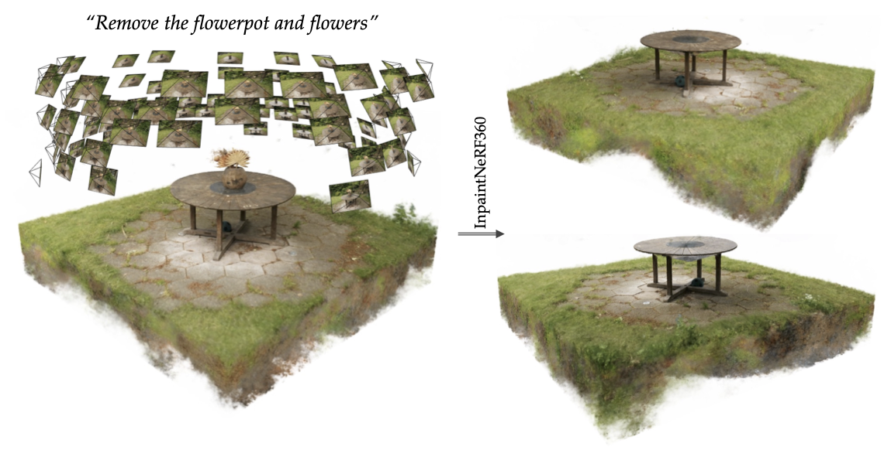

InpaintNeRF360: Text-Guided 3D Inpainting
on Unbounded Neural Radiance Fields
arXiv 2023
Abstract

Neural Radiance Fields (NeRF) can generate highly realistic novel views. However, editing 3D scenes represented by NeRF across 360-degree views, particularly removing objects while preserving geometric and photometric consistency, remains a challenging problem due to NeRF's implicit scene representation. In this paper, we propose InpaintNeRF360, a unified framework that utilizes natural language instructions as guidance for inpainting NeRF-based 3D scenes.Our approach employs a promptable segmentation model by generating multi-modal prompts from the encoded text for multiview segmentation. We apply depth-space warping to enforce viewing consistency in the segmentations, and further refine the inpainted NeRF model using perceptual priors to ensure visual plausibility. InpaintNeRF360 is capable of simultaneously removing multiple objects or modifying object appearance based on text instructions while synthesizing 3D viewing-consistent and photo-realistic inpainting. Through extensive experiments on both unbounded and frontal-facing scenes trained through NeRF, we demonstrate the effectiveness of our approach and showcase its potential to enhance the editability of implicit radiance fields.
Citation
Acknowledgements
This work was supported in part by the Swiss National Science Foundation via the Sinergia grant CRSII5-180359.
The website template was borrowed from Michaël Gharbi.